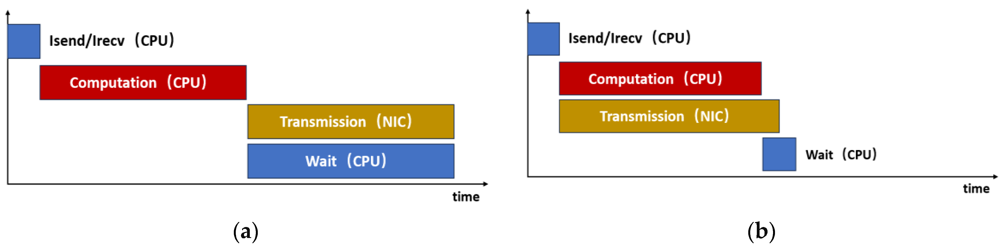
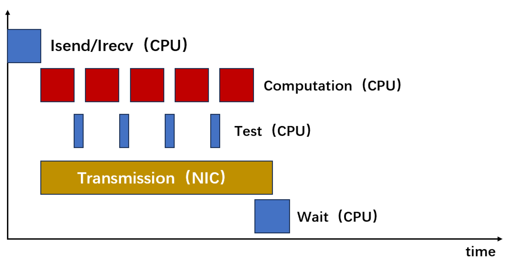
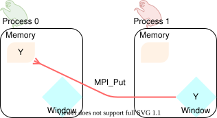
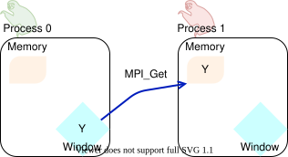
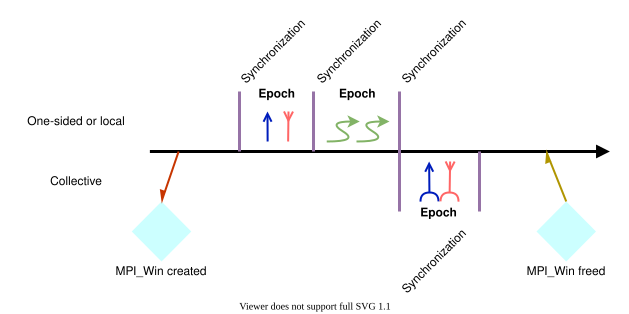

20261022 Advanced MPI¶
Communication and Computation overlap¶
Latency will kill the performance of a parallel program
Try and “hide” the latency, so that it doesn’t actually impact the end runtime
Given non-blocking communication, it would seem we should be able to overlap this quite easily!
/* Process 0 sends an d Process 1 recei ves */
if ( rank == 0) {
MPI_Isend(outbuf, n, MPI_INT , 1, 0, comm , &request);
else if (rank == 1) {
MPI_Irecv(inbuf, n, MPI_INT , 0, 0, comm , &request);
}
// Do some computations here while waiting for the messages to be sent and recieved!
// Need communication to be done
MPI_Wait(&request, MPI_STATUS_IGNORE);
Alas, this overly simplies the reality
There is work to be done that isn’t strictly waiting on communication
Rank has to active pack together the data for sending
Somebody (the rank’s process or some thread) has to actually recieve the data and put it into the system buffer
(Possibly) a rank has a more active role in the communication process (e.g. Reduce, where we need may need to recieve, compute, and send data)
There are different models of interaction between the CPU and the NIC (Network Interface Card)

The overlap is never completely free and will never be perfect in the real world!

Figure from Towards Efficient HPC: Exploring Overlap Strategies Using MPI Non-Blocking Communication
is no overlap, (b) is real-world ideal (still have work done by rank to pack/unpack data)
Overlap Progression¶
There are different ways of how the overlap can be accomplished, known as progression strategies.
They fall under two categories: weak progression and strong progression
Weak progression refers to the user code having to periodically give time for the MPI library to but-in during running
Often done by periodically calling
MPI_Test*()or similar to allow MPI to process some messagesThis is the worst kind
How often should you call
MPI_Test*()to ensure adequate progression? Who knows! Just have to figure it out… Gross

Figure from Towards Efficient HPC: Exploring Overlap Strategies Using MPI Non-Blocking Communication
Strong progression refers to some other mechanism for allowing the MPI library to handle communication transparently without allowing the user code to be impacted
Can be done by spawning an extra thread to handle the communication
Possibly using SMT functionality in a compute node
Or designating a core to handle all the communications of a set of ranks
Or, ideally, offloading the work to a speciallized NIC card
This is where HPC system MPI libraries come in handy; they’ll try and utilize these features automagically
These are particularly significant issues for non-blocking collective operations
Collective operations are often implemented with more complex communication patterns which require participation from all ranks
For example, the binary tree Reduction from the previous lecture
These more complex patterns will require active work done by the particpating ranks
i.e. it’s not a “send and forget” participation
How to handle this weak/strong progression is still an active area of work. See MPI Progress For All as an example, presented as SC24.
One-Sided MPI¶
What if we didn’t need a “hand shake” for every communication?
What if we could simply “put” and “get” data in another rank’s memory, like it was shared memory?
Rank’s create “windows” that serve as “public” memory accessible by other ranks
Window is simply a buffer of memory somewhere
The program provides the buffer to be used
Window is created across all ranks which will participate
A rank can
MPI_Put()andMPI_Get()to other rank’s windowsMust be coordination between ranks on who gets to put data in which area of window


From ENCCS MPI Tutorial
Synchronization¶
One-sided communication runs into a pretty similar issue as shared memory: How do we know when we can safely read or write to shared/public memory?
In other words, how do we guarantee correct ordering of the memory access?
One-sided MPI requires syncronization to accomplish this
No such thing as free lunch, we’ll still have to pay a bit to get our parallelization
In MPI documentation, these synchronizations separate Epochs; times where windows may or may not be written to

Green squiggles represent local computation
Synchronizations required for 2-sided communication of windowed data as well (e.g. collectives)
One-sided MPI has a few different syncronization options
MPI_Win_fence(): Collective operation, effectively anMPI_Barrier()Every single rank with shared window synchronizes
MPI_Win_post(),MPI_Win_start(),MPI_Win_complete(),MPI_Win_wait(): collective operation, more precise (not a blunt barrier)Allows you to differentiate between “my window is ready to be read from” and “I’m accessing somebody else’s window”
Specify exactly which ranks you need to syncronize with
MPI_Win_lock(),MPI_Win_unlock(): non-collective operation, most efficientTarget buffer not involved in syncronization at all
This is NOT a lock/mutex/atomic on a remote memory region
Similar functionality by specifying the lock as
MPI_LOCK_EXCLUSIVE
It applies to remote access only, not to the local window buffer
One-sided equivalent of the earlier non-blocking example
if (rank == 0)
MPI_Win_create(MPI_BOTTOM, 0, sizeof(int), MPI_INFO_NULL, comm, &win);
else if (rank == 1)
MPI_Win_create(inbuf, n * sizeof(int), sizeof(int), MPI_INFO_NULL, comm, &win)
MPI_Win_fence(O, win) ;
if (rank == 0)
MPI_Put(outbuf, n, MPI_INT, 1, 0, n, MPI_INT, win);
// Do some computations here while waiting for the messages to be sent and recieved!
// Need communication to be done
MPI_Win_fence(O, win);
MPI_Win_free(&win);
One-sided benefits¶
Even more fine-grain control over communication and syncronization
Allows for very specific optimizations
More natural expression of communication-computation overlap
Communications occur alongside computations with little distinguishing
Possibility of better communication-computation overlap, less progression issues
Particularly with
MPI_Win_lock(), e.g. one-sided synchronization
RDMA vs RMA¶
What we’ve described above uses remote memory access (RMA) semantics
The CPU (be it the target rank or a dedicated process that MPI created) still handles the communication of memory to the NIC
This is better than 2-sided communication, but still not perfect
We still have the overhead of handling the communication
Luckily, technology is cool.
Most modern networking solutions (for HPC, e.g. Infiniband) have remote direct memory access (RDMA) capability
They can read straight from physical memory, bypassing the CPU entirely
Includes atomic memory operations and doing some collective operations in hardware rather than software
This means one-sided reads are “free”
The NIC still has to process network requests, grab the data from memory, package it, and send it
But the CPU doesn’t have to do a thing!
RDMA is the ideal communication-computation overlap, as half the communication is completely independent of the MPI process
Using Advanced MPI: Modern Features of the Message-Passing Interface textbook
MPI+OpenMP (or MPI+Threads in general)¶
General idea is one MPI rank for each compute node (e.g. per shared memory region) and OpenMP threads for every core within that rank
Memory distributed inter-node, but shared intra-node
This way, we avoid the performance implications of distributed memory parallelism when on shared-memory systems!
Sounds great, but isn’t the full story
Message passing between ranks on same node sounds expensive, but it’s not
MPI libraries are smart
Most MPI libraries will detect if ranks are colocated on the same rank and not use networking communication, but will (often) implement a local data copy
Shared memory is conceptually simple, but is still parallel programming
Shared memory still requires synchronizations and locks to maintain ordering
Shared memory models often hide these issues, leading to many potential performance traps
Even more shared issues comes from cache coherency and false sharing
In fact, to get away from these issues, we often want there to be as little “shared memory” between threads as possible
Alternatives¶
Good OpenMP code looks like normal MPI code
Every thread has it’s own working memory
Data is passed to it in choreographed/synchronized patterns
Synchronization between threads it kept to the absolute minimum
We can implement shared memory using MPI
Create a MPI_Comm based on the shared memory ranks
Can create windows based on that comm (same one-sided communication windows as we mentioned before)
See Gropp Slides, slide 13 specifically
Entire minisymposium discussing the merits (or lack there of) of hybrid programming in this way.